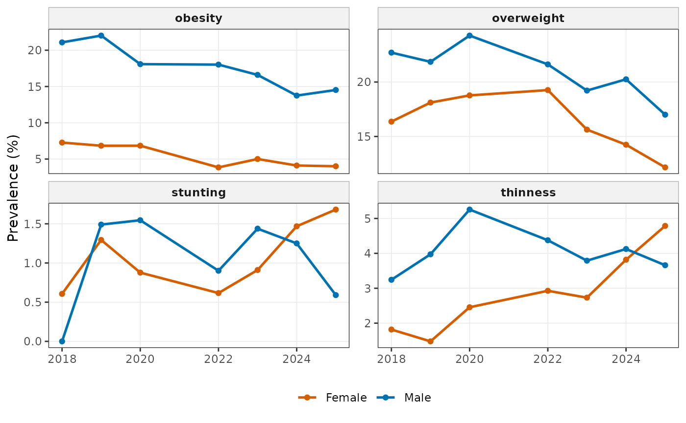

Flow: stunting, thinness, obesity and double burden (Ho et al. 2026, medRxiv 2026.07.26.26358982)
Source:R/flow-descriptive.R
wgh_flow_malnutrition_trends.RdPrevalence of each indicator by sex and year, Cochran-Armitage trend tests, GEE logistic models of calendar trends within age groups, individual and population double burden by site, and the main figures (trend lines, stacked status bars, double burden heat map and odds ratio forest plot).
Arguments
- x
Growth data with
height,weightandyear. WhenNULL, a simulatedwgh_likecohort is generated.- mode
Run mode (see
wgh_config());NULLkeeps the current mode.
Value
A wgh_report.
Examples
rep <- wgh_flow_malnutrition_trends(growdat, mode = "dev")
rep
#>
#> ── Stunting, thinness, obesity and double burden (Ho et al. 2026, medRxiv 2026.07.26.26358982) ──
#>
#> Tables (6): table1, prevalence_by_year, trend_tests, gee_odds_ratios,
#> double_burden, median_by_site
#> Figures (4): fig_trends, fig_status_bars, fig_dbm_heatmap, fig_or_forest
#> Model status: 4 ok, 0 failed, 0 skipped
#> ok: GEE calendar trend, stunting (warning: Skipping age group(s) 10-14 y, 15-18
#> y with fewer than 10 events. | Skipping age group(s) 5-9 y, 10-14 y with fewer
#> than 10 events.)
#> ok: GEE calendar trend, obesity (warning: Skipping age group(s) <5 y with fewer
#> than 10 events.)
#> Settings: mode = dev; n_children = 3259
rep$tables$prevalence_by_year
#> # A tibble: 56 × 8
#> indicator sex year n cases prevalence lower upper
#> <chr> <chr> <int> <int> <int> <dbl> <dbl> <dbl>
#> 1 stunting Male 2018 185 0 0 0 2.03
#> 2 stunting Female 2018 165 1 0.606 0.107 3.35
#> 3 stunting Male 2019 604 9 1.49 0.786 2.81
#> 4 stunting Female 2019 541 7 1.29 0.628 2.65
#> 5 stunting Male 2020 647 10 1.55 0.842 2.82
#> 6 stunting Female 2020 570 5 0.877 0.375 2.04
#> 7 stunting Male 2022 777 7 0.901 0.437 1.85
#> 8 stunting Female 2022 649 4 0.616 0.240 1.57
#> 9 stunting Male 2023 765 11 1.44 0.805 2.56
#> 10 stunting Female 2023 659 6 0.910 0.418 1.97
#> # ℹ 46 more rows
plot(rep, 1)
